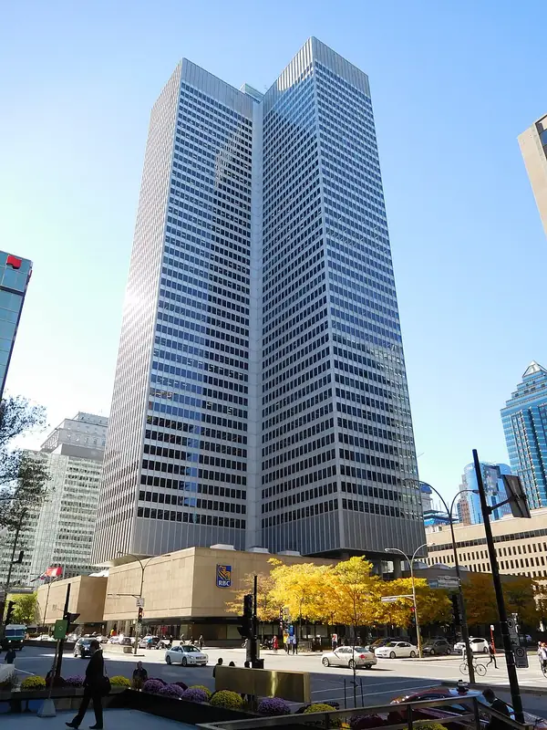
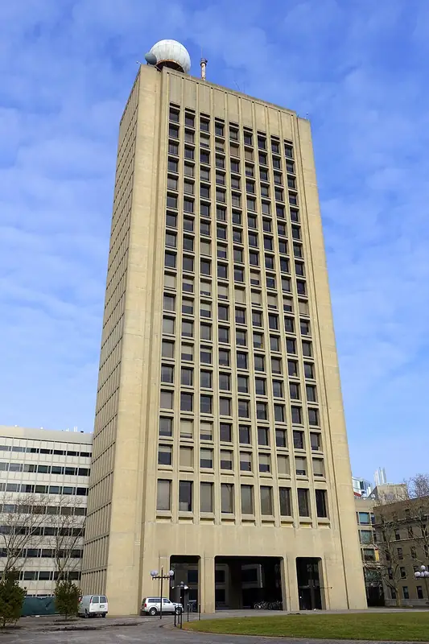
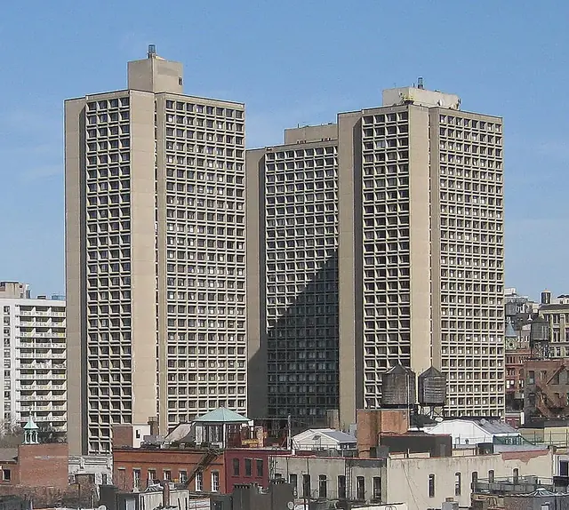
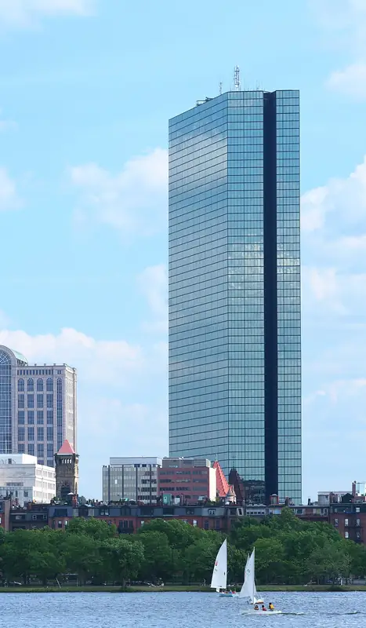
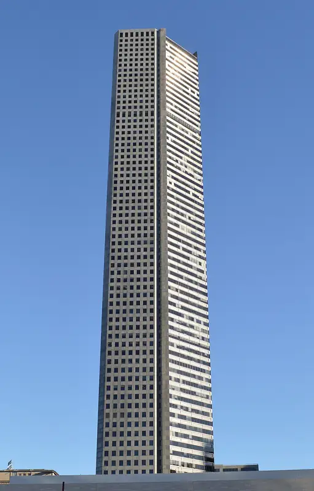
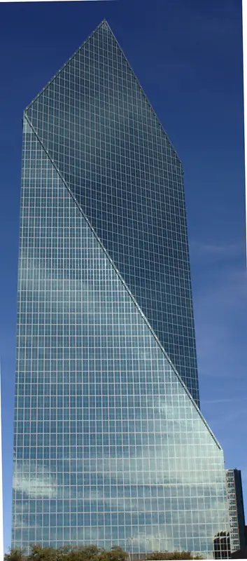
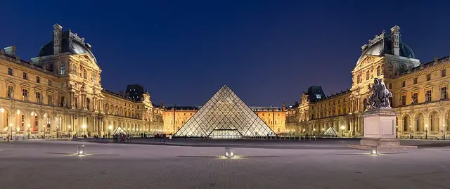
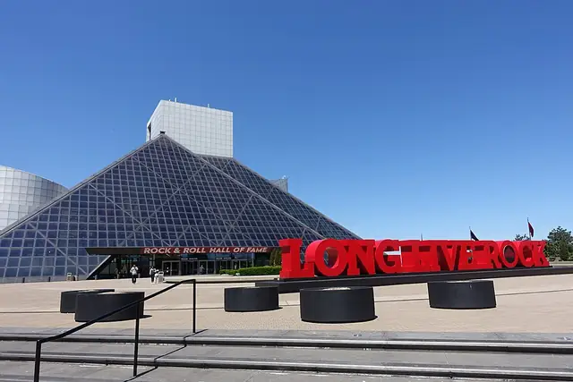
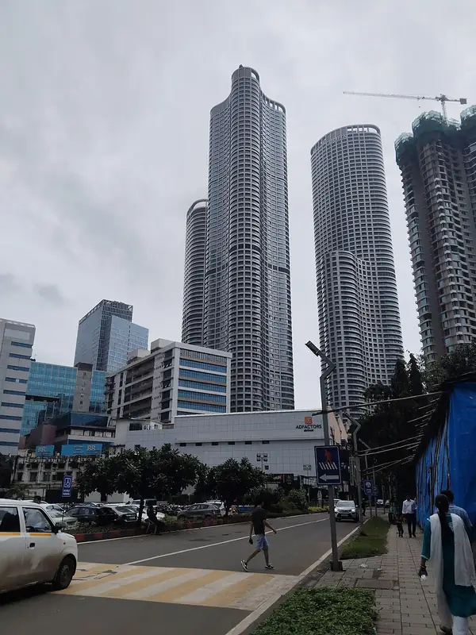

Architect · 17 buildings in Stamped!
I. M. Pei
Chinese-American modernist (1917–2019) behind the Louvre Pyramid and Hong Kong's Bank of China Tower.
17 buildings in the app

Place Ville MarieMontreal · 1962 · International StylePhoto: Jeangagnon, CC BY-SA 4.0, Wikimedia Commons
Green BuildingMassachusetts Institute of Technology · 1964 · BrutalistPhoto: Daderot, CC0, Wikimedia Commons
Silver TowersNew York University · 1966 · ModernPhoto: SilverTowers-wide.jpg: how_long_it_takes derivative work: MBisanz talk, CC BY 2.0, Wikimedia Commons- Cleo Rogers Memorial LibraryColumbus, Indiana · 1969 · International StylePhoto: User:RichardMcCoy, CC BY-SA 3.0, Wikimedia Commons

200 ClarendonBoston · 1976 · ModernistPhoto: Tomtheman5, CC BY-SA 3.0, Wikimedia Commons- Baltimore World Trade CenterBaltimore · 1977 · ModernismPhoto: Jmj1000 at en.wikipedia, Public domain, Wikimedia Commons
- Dallas City HallDallas · 1978 · BrutalistPhoto: Carol M. Highsmith, Public domain, Wikimedia Commons
- National Gallery of Art (East Building)Washington D.C. · 1978 · ModernistPhoto: ajay_suresh, CC BY 4.0, Wikimedia Commons
- Eskenazi Museum of ArtIndiana University Bloomington · 1982 · Modernist

JPMorgan Chase TowerHouston · 1982 · ModernistPhoto: Agsftw, CC BY-SA 3.0, Wikimedia Commons
Fountain PlaceDallas · 1986 · Modernist / Late ModernPhoto: Kumar Appaiah, CC BY-SA 2.0, Wikimedia Commons
Louvre Museum (Pyramid)Paris · 1989 · Renaissance / Modernist (Pyramid)Photo: Benh LIEU SONG (Flickr), CC BY-SA 3.0, Wikimedia Commons- Morton H. Meyerson Symphony CenterDallas · 1989 · ModernistPhoto: Photo: Andreas Praefcke, CC BY 3.0, Wikimedia Commons
 Bank of China TowerHong Kong · 1990 · High-Tech / ModernistPhoto: WiNG, CC BY-SA 4.0, Wikimedia Commons
Bank of China TowerHong Kong · 1990 · High-Tech / ModernistPhoto: WiNG, CC BY-SA 4.0, Wikimedia Commons
Rock & Roll Hall of FameCleveland · 1995 · Postmodern / GeometricPhoto: GordonMakryllos, CC BY-SA 4.0, Wikimedia Commons- Museum of Islamic Art (Doha)Doha · 2008 · Contemporary / Islamic geometric

World OneMumbai · 2020 · ModernistPhoto: Creater903a, CC BY 4.0, Wikimedia Commons
Collect every I. M. Pei building.
Stamped! keeps track of whose buildings you've seen and shows your favorite architect. Free on iPhone, iPad, Mac and Apple Vision Pro.
Download on theApp StoreEnjoying the guides? Leave a tip to help keep new cities coming.